Introduction¶
Container Security with Sysdig¶
Welcome to our workshop! In this workshop we'll be using Sysdig Secure on IBM Cloud to scan container images and evaluate OpenShift Clusters for compliance. The goals of this workshop are:
- Scan container images
- Explore runtime scanning policies
- Take a look at compliance scanning
Steps¶
Image scanning with Sysdig Secure¶
In this section we will explore container image scanning with Sysdig Secure. For this workshop we will be taking a look at the Node Goat application that was built by OWASP as a purposely vulnerable application.
-
From the IBM Cloud dashboard, click on the menu button at the top left of the page, scroll down, and click on
Observability.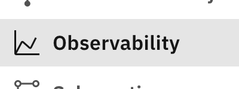
-
Then select
Monitoringon the left side of the page. -
You should now see a list of instances labeled
sysdig-xxx. Find the instance that corresponds to the cluster number that you were assigned. For example, if I was assigned a cluster ending in-012, then I would usesysdig-012. Click onOpen Dashboard. -
By default, you will be taken into the Sysdig Monitor side of the service. To switch to Sysdig Secure, click on the
Monitorbutton at the top left and then click on theSecureicon that appears.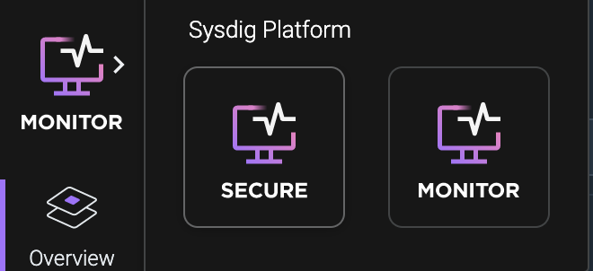
-
Now that we are in Sysdig Secure we need to get our api-key. Click on the circle with your initials at the bottom left of the screen that is right below the
Getting Startedbutton. -
Click on
Settings -
Look for the section labeled
Sysdig Secure APIand copy your API token and paste it into a notepad or somewhere that you can get it later.
-
Now in your terminal enter the following while replacing
with your Sysdig Secure API token copied in the previous step: export SYSDIG_TOKEN=<api_token> -
Go back to the settings page and find the tab labeled
Agent Installationon the left side of the page.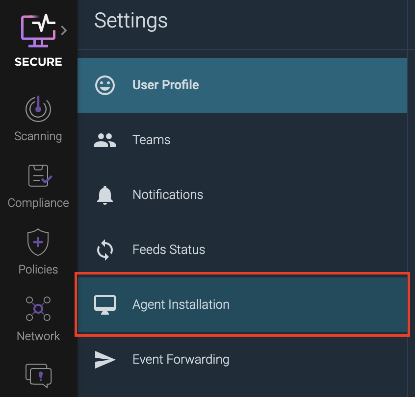
-
Copy the access key that shows up and save it in a notepad or somewhere you can copy it easily later.
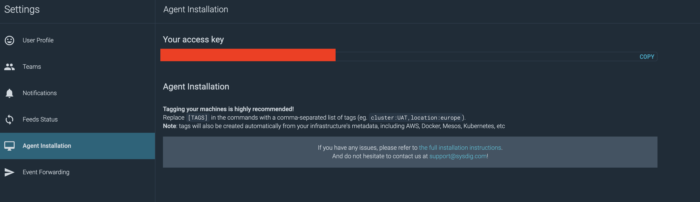
-
Go back to your terminal and enter the following, replacing
with the access key you just copied. Note: The API token and Access Key are different and cannot be used interchangeably. export ACCESS_KEY=<access_key> -
Then we are going to deploy a container to scan a container image for us. Use the following command to deploy the scanning container:
oc run --rm -it --image quay.io/sysdig/secure-inline-scan:2 -- image-scan docker.io/odrodrig/node-goat:1.0 --sysdig-token $SYSDIG_TOKEN --sysdig-url https://us-south.monitoring.cloud.ibm.com/ -
After a couple of minutes the scan will complete and it should result in a fail. Let's take a look at why. In the output of the scan there should be a url that takes you to the results page in Sysdig Secure. Copy the link and paste it into your browser.
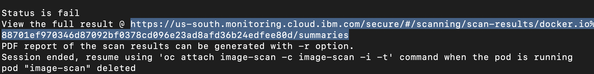
-
The link should take your to the scan results page in Sysdig Secure. From here we can see that there are 23 total vulnerabilities found based on the default scanning policy. You can click on
DefaultPolicyunder theBreakdownsection to view more specific information on why the scan failed.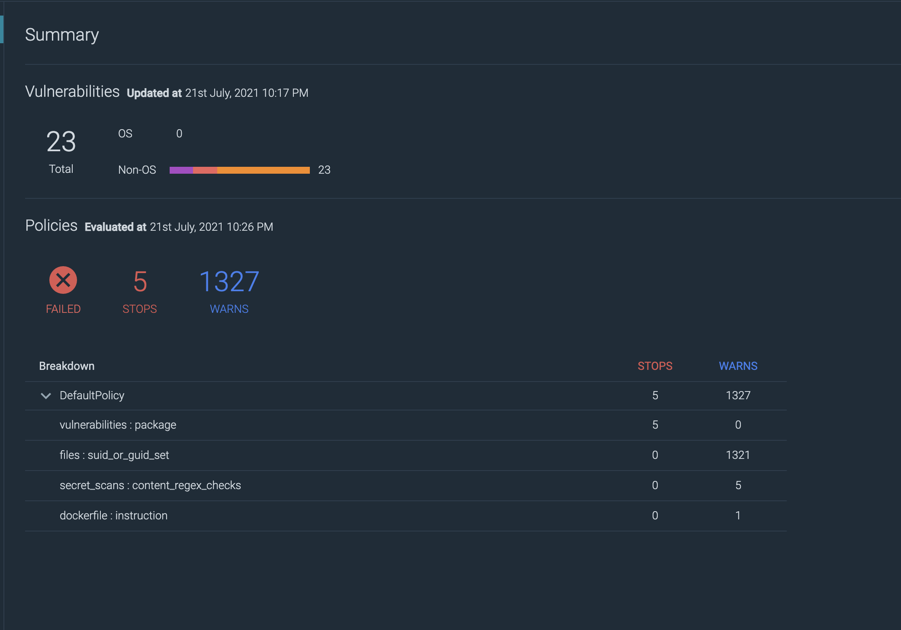
-
This image has 5 High or Critical vulnerabilities that caused the scan to fail and a lot of warnings for various other rules that were flagged.
-
Take some time to check out the
Non-operating systemtab underVulnerabilitiesto see a list of CVEs found for the 3rd party dependencies in the application.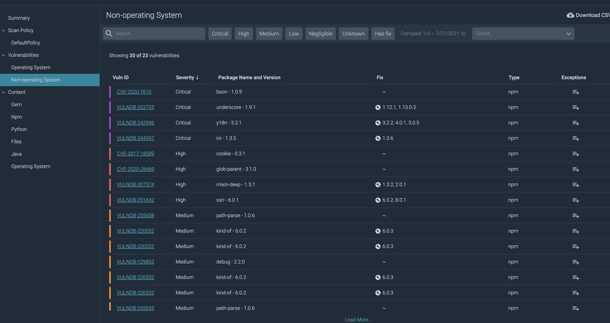
-
You can also check out the
NPMtab under theContentsection to view information about the location of the package in the container, the source of the package, and most importantly the licenses used for each package.
Compliance Scanning¶
In this section we will check out how to enable scanning for compliance frameworks such as PCI, SOC2, NIST-800-53, ISO27001, and more. We will do this by enabling periodic benchmarks against our workloads on the cluster.
- Before we can start scanning our cluster we first need to install the Sysdig agent that will allow our cluster to communicate with Sysdig Secure. In your terminal, enter the following:
curl -sL https://ibm.biz/install-sysdig-k8s-agent | bash -s -- -a $ACCESS_KEY -c ingest.us-south.monitoring.cloud.ibm.com --openshift --imageanalyzer
-
There should be 6 pods currently being created: 1 sysdig agent per node and 1 image analyzer per node. Before we move on we need to ensure that the pods are running. Run the following command:
oc get pods -n ibm-observeIf any pods are not yet ready, wait a few seconds and try again.
-
Next, in Sysdig Secure click on the button labeled
Complianceon the left side of the page. From here we can scan our infrastructure for compliance to some of the more popular specifications. -
Select
SOC2under theWorkloadssection as the specification from the list that appears.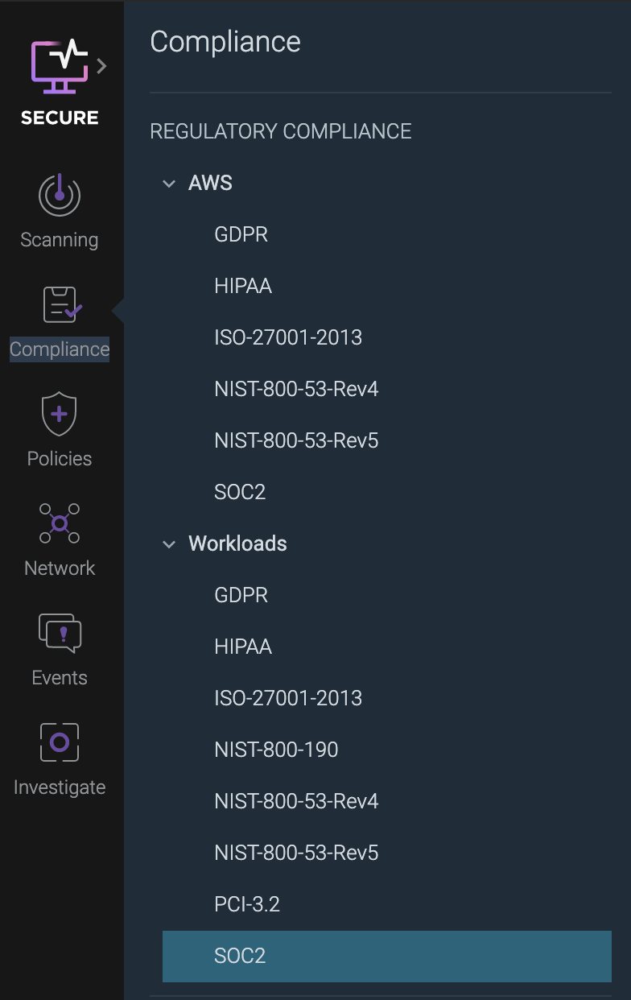
-
You should see a report with various controls that fall under the SOC2 framework. There are a few failures that can be addressed, the easiest being scheduling a CIS benchmark on our cluster. To do this, click on
Schedule CIS Benchmarkon the left side of the page underCommon Fixesand select the first option that appears underneath it.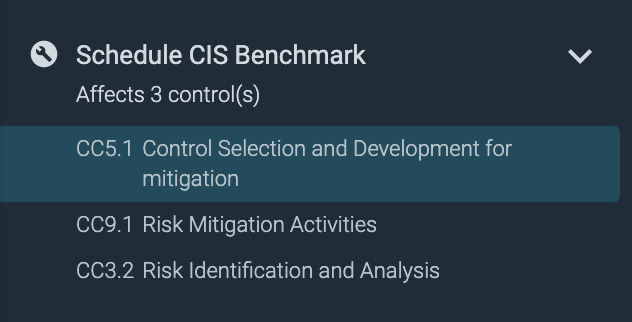
-
Then a new section will expand on the right side of the page and there should be a link to
Schedule CIS Benchmark. Click on the link.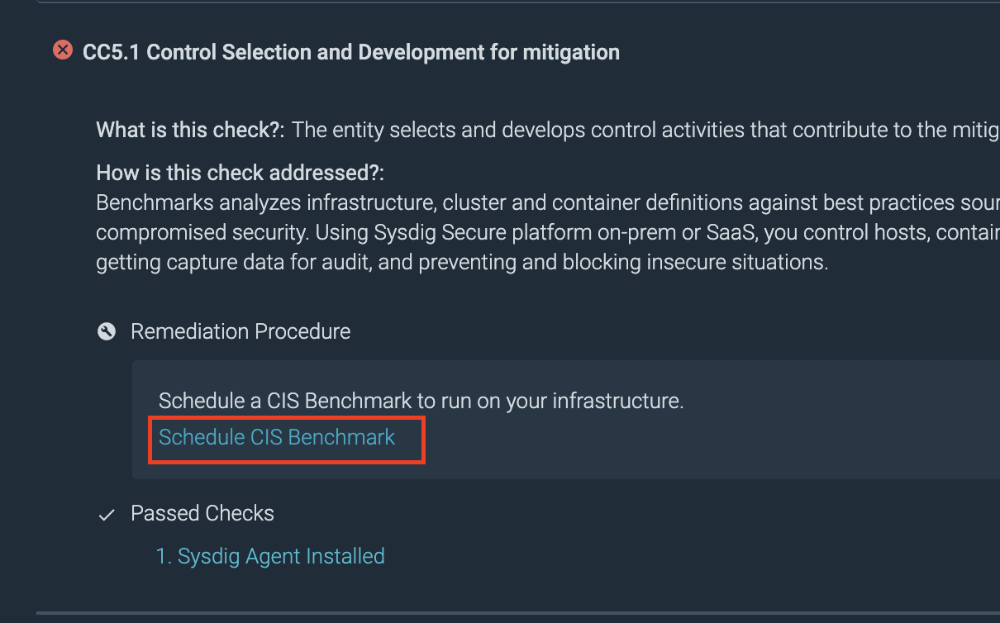
-
On the new page click on
Scheduleat the top right of the page. -
Click on
Add Taskthat appears at the top right corner of the page. -
Next, fill out the form that appears.
- Give the benchmark a name such as
CIS Benchmark - For
TypeselectKubernetes benchmark - You can leave the rest alone
Click
Saveat the top right.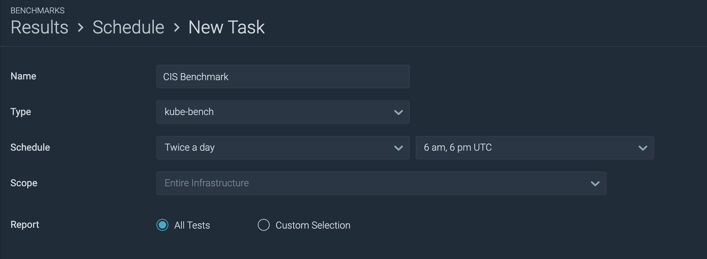
- Give the benchmark a name such as
-
You now have a CIS Benchmark scheduled to run twice a day. Rather than wait, let's kick off a benchmark now. Hover over the scheduled benchmark that you just created and click on the play icon that appears to the right side of the benchmark entry.
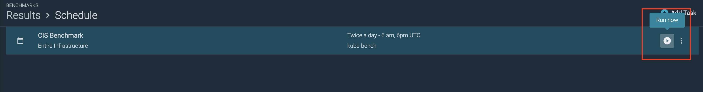
-
Let's review the results by clicking on
Resultsat the top left of the page.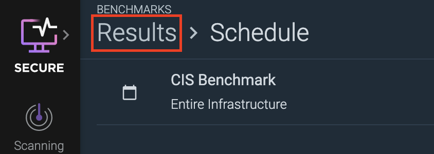
You should now see a few different results show up. The benchmark tests each one of the worker nodes in the cluster. Since we have 3 nodes, there should be 3 sets of results.
-
Click on one of the benchmark results to take a look. It doesn't matter which one.
You can see the tests that passed or failed on this page.
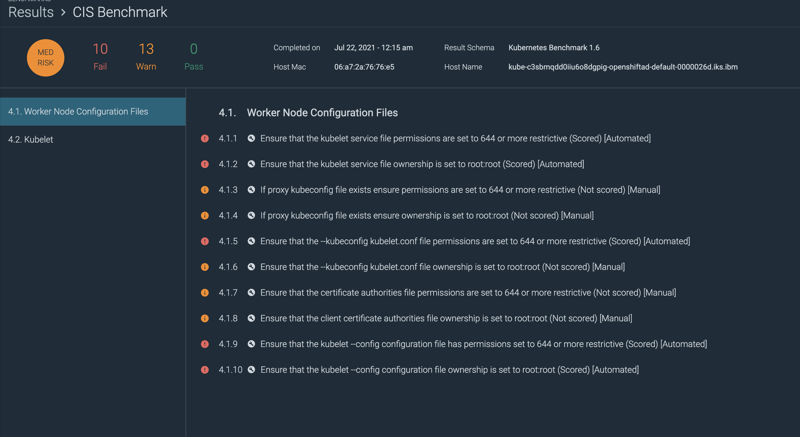
-
Now, go back to the SOC2 regulatory compliance report page by clicking on the
Compliancebutton on the left side of the page and selectingSOC2under theWorkloadssection. -
You should notice that now there are more controls that our cluster passed. If you select the first control under
Risk Assessmentyou should see that it is now a green checkmark because we have regularly scheduled CIS Benchmarks now.By going through each control and addressing the issues identified you can ensure that your cluster is SOC2 compliant. For this workshop, you don't have to go through each one but if you click through a few you will notice that some controls require enabling a policy with Falco rules. We will explore this in the next section.
Security Policies and Rules¶
In this section we will explore the policies that you can set to alert you of suspicious activity and the rules that make them up. Sysdig Secure utilizes an Open Source intrusion detection and activity monitoring project known as Falco which was created by Sysdig and then donated to the CNCF in 2018.
Sysdig Secure comes with a set of Falco policies that can be enabled with the flick of switch but you also have the ability to create your own custom rules using the Falco syntax. For the workshop today we will be exploring the existing rules.
-
Click on the
Policiesbutton on the left side of the page and selectRuntime Policies. This will take you to a page of policies that come with Sysdig Secure.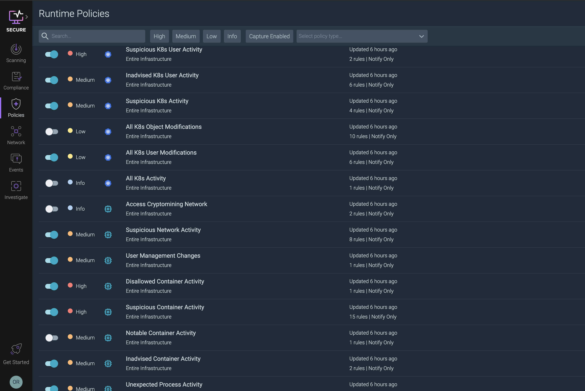
-
Scroll down until you see the policy called
Access Cryptomining Networkand click on the row, not the toggle switch. This should open up a new section on the right side of the page with information about the rules in this policy.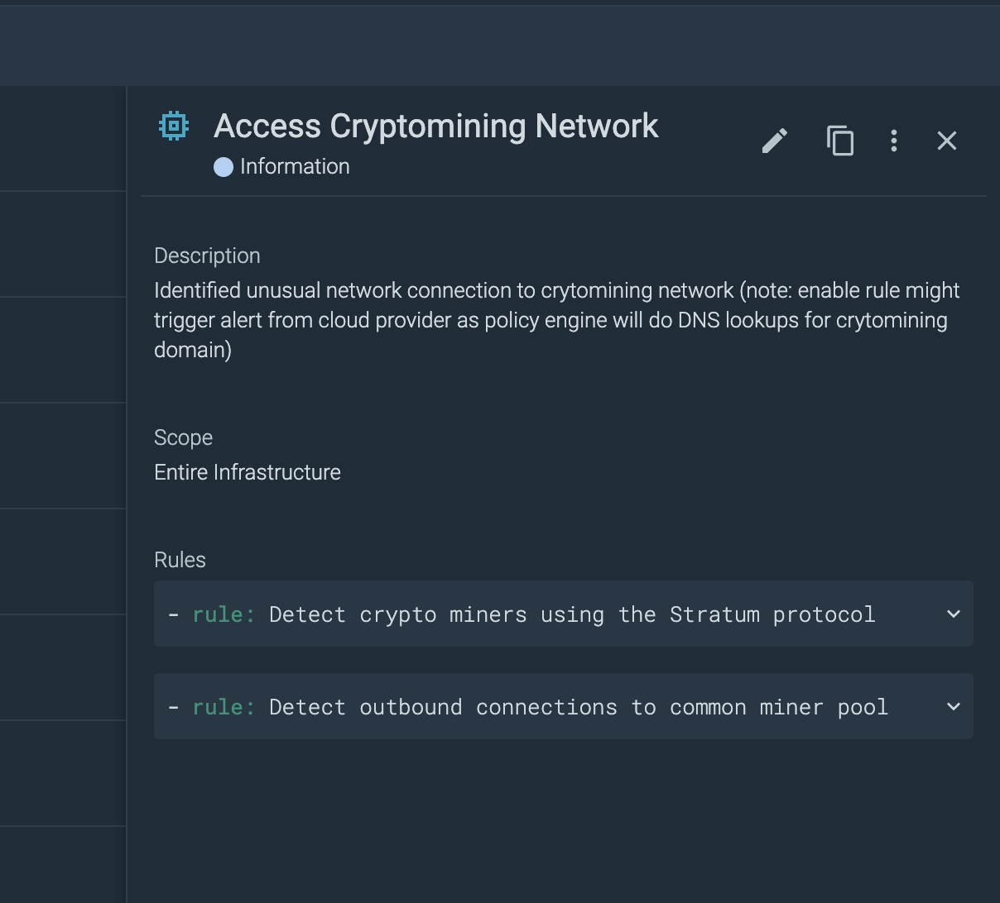
-
Examine the two rules: one rule alerts if container traffic includes the stratum protocol which is a protocol commonly used to communicate with a mining network. The other rule will alert if a container attempts to connect through common mining ports.
-
Enable the
Access Cryptomining Networkpolicy by click on the toggle switch. This policy is now in effect and will trigger if a container attempts to connect with the stratum protocol or through one of the identified common mining ports. -
To view the events and triggered policies, check out the
Eventsbutton on the left side of the page. This will take you to a stream of events that have triggered policy rules on the cluster.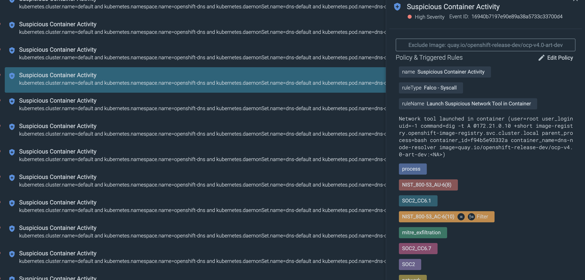
Conclusion¶
In this workshop we took a look at various pieces of Sysdig Secure such as container image scanning, regulatory compliance scanning, and even security policies with Falco.